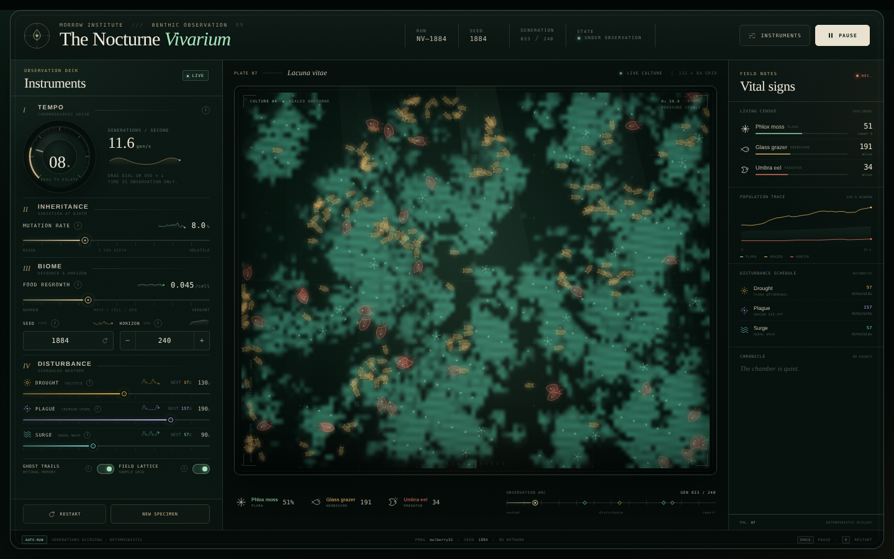
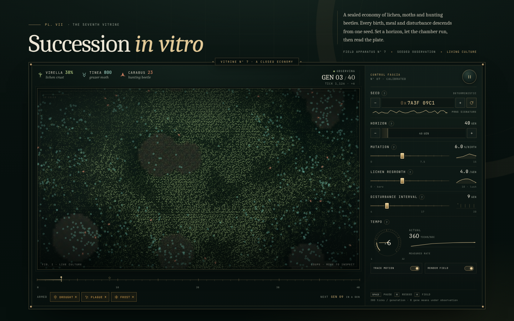
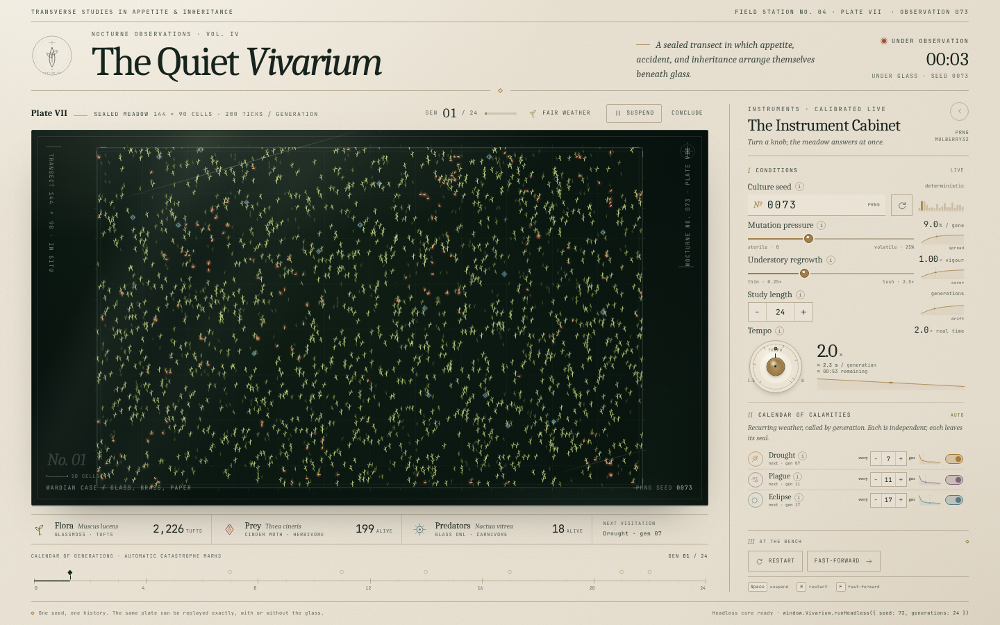
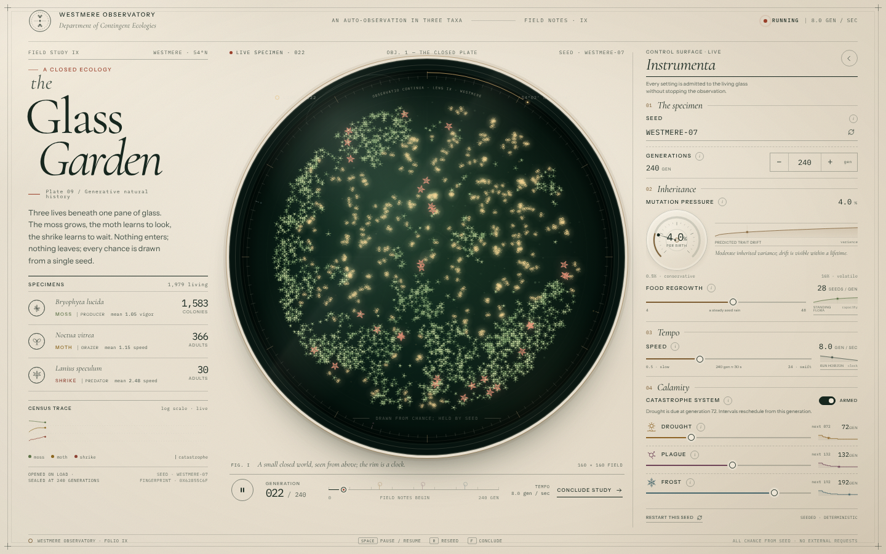
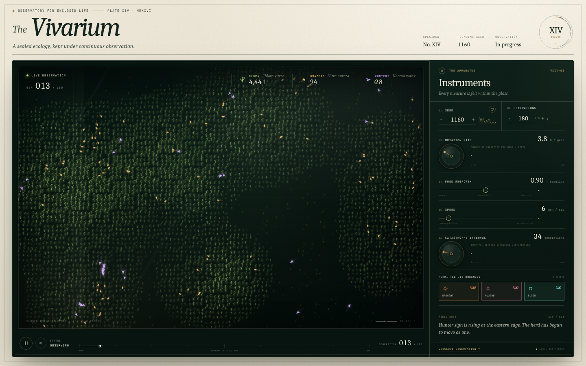
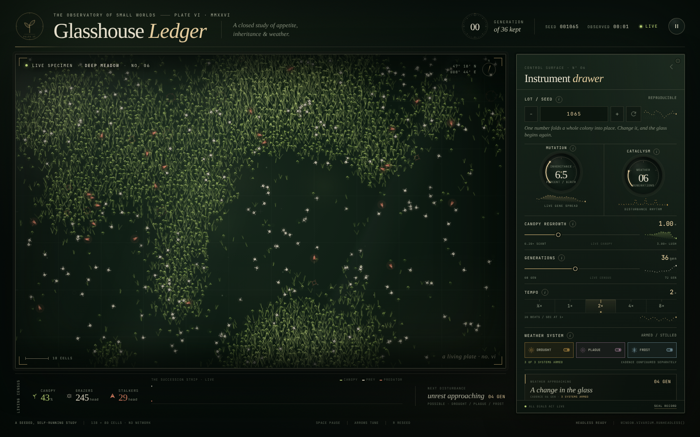
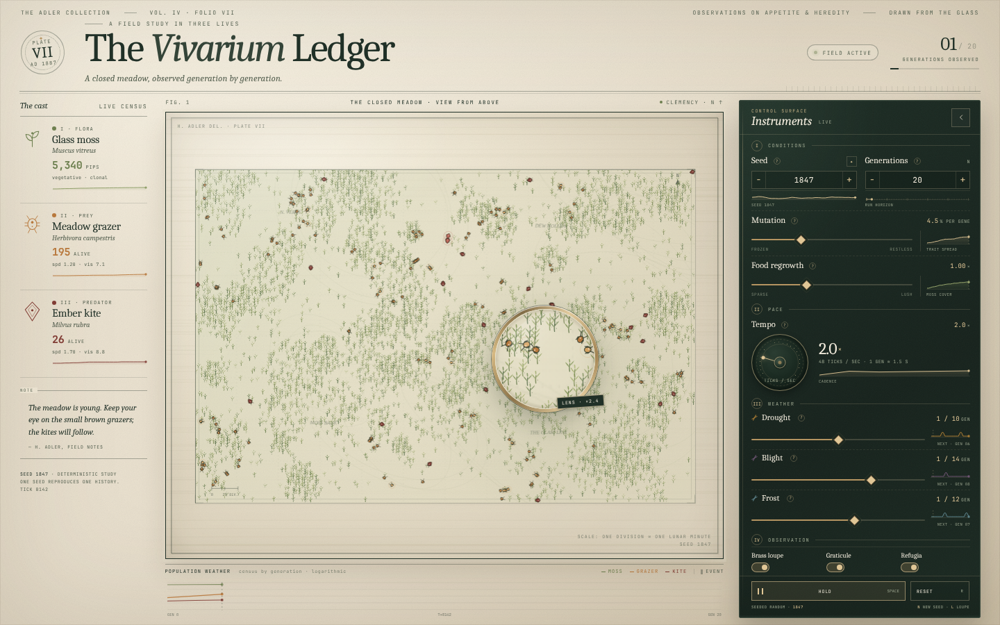
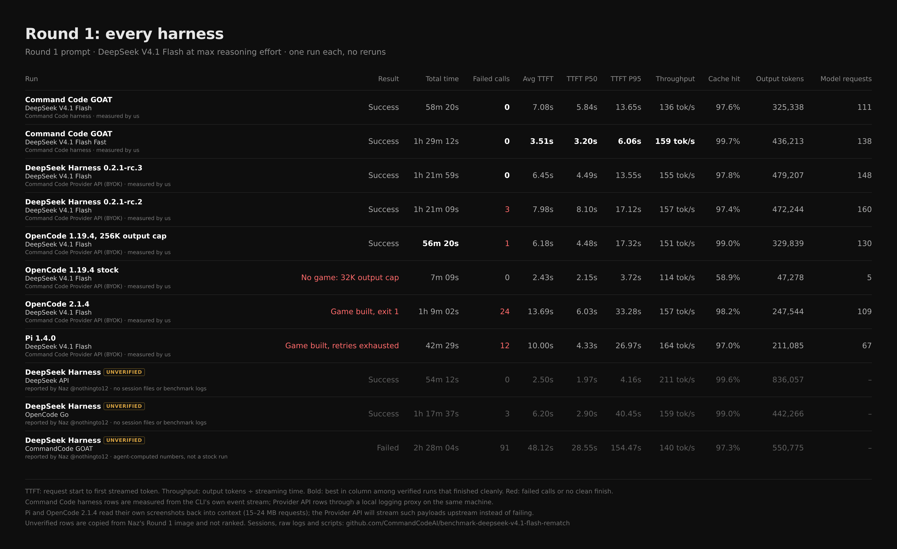
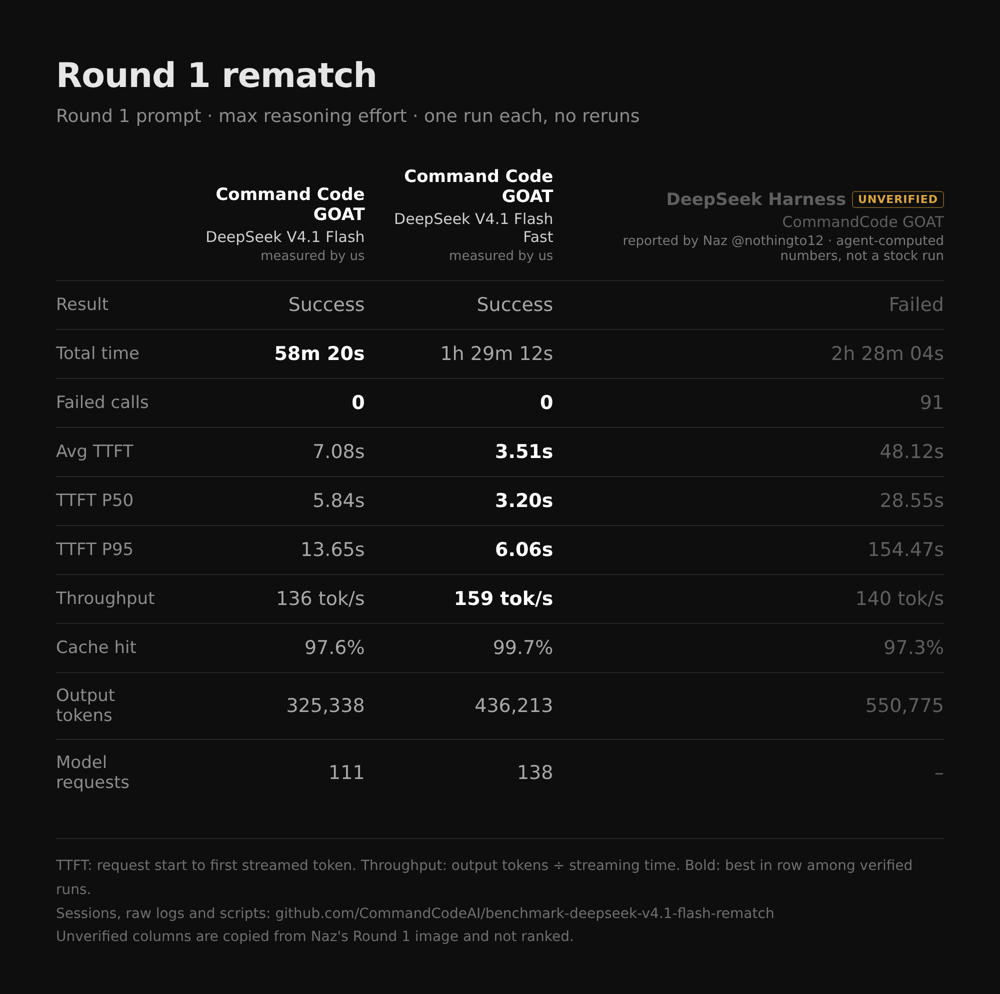

The Nocturne Vivarium
Command Code GOAT · DeepSeek V4.1 Flash
58m 20s · 0 failed calls · 7.08s avg TTFT · 136 tok/s
Open the game →
The same Round 1 prompt at max reasoning effort, one run each, no reruns. Both runs succeeded with 0 failed calls.
Both full Command Code session files, the raw timestamped event logs, every file the models wrote, and the scripts behind every number. Anyone can check them and recompute the results.
Open the repo →His Round 1 post reports a failed CommandCode GOAT run with 91 failed calls. His own session files show image input on, 92 screenshots resent on every request (up to ~20 MB each) and 3 concurrent Agent Teams agents. "2h 28m 04s" is a helper agent he stopped by hand after the build had already failed, and the TTFT numbers were computed by the agent itself, retries included. With no screenshots in context, his run had 0 failures and a 3.9s P50 TTFT. We're hardening the API for heavy image payloads anyway.


Stock OpenCode 1.19.4 built nothing (32K output cap). Pi and OpenCode 2.1.4 failures were Command Code Provider API cut-offs on 15–24 MB requests, a Command Code-side issue.






